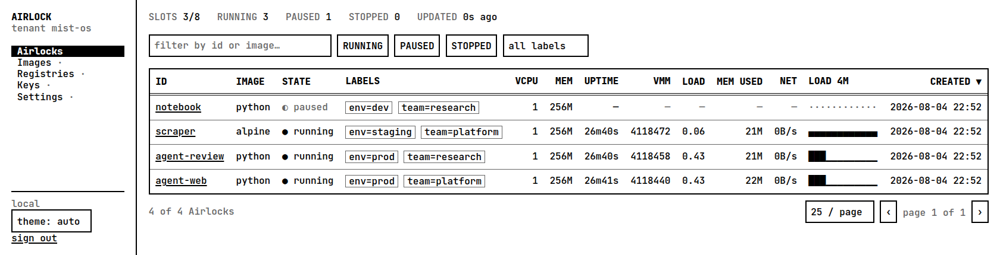

Run untrusted AI-agent code in Firecracker microVMs.
Minimal, self-hostable, on-prem first — cloud-ready by construction.
Airlock gives an AI agent a place to run generated code that assumes the code is hostile: each session is a Firecracker microVM with its own kernel, so a compromised guest cannot reach the host. Sessions are durable — pause to a snapshot, resume in milliseconds, scale to zero when idle — and it is driven from a CLI. It runs on one KVM box today, and on cloud instances tomorrow without changing a line above the substrate.
Request a beta invite → Early, and intentionally small.
A container shares the host kernel. A kernel exploit from inside one is a host compromise. Untrusted code generated by a model is exactly the workload where that matters, so Airlock's boundary is a microVM with its own kernel — a fork bomb, a memory bomb, a disk-fill, or a kernel exploit inside a guest can at worst take down that guest, which we destroy after the session anyway.
Docker is used as an image source and never as the runtime boundary. Execution hosts run no Docker daemon.
airlock run python:3.11-slim -- python3 -c "print('hi!')"
airlock session create python-ds # durable, pausable session
airlock exec <id> -- pytest -q
airlock pause <id> # snapshot, free the VM
airlock resume <id> # restore in ~ms
airlock fork <id> # clone from a snapshot
airlock ls ; airlock ps # inventory ; live VMMs
airlock metrics --watch # live guest CPU/mem
airlock logs -f <id> # output, even when stoppedThe CLI is the first-class interface. SDKs for js, python, go, and rust wrap the same gRPC API.
A read-only web dashboard watches a fleet from another machine. It is a client of the same gRPC API the CLI uses, authenticates with its own certificate, and stores nothing — the only history is a four-minute ring in memory that dies with the process.

The workload Airlock exists for is code an agent just wrote, so an agent has to be able to drive it without a human in the loop. Two pieces ship for that.
An MCP server — airlock mcp — serving fourteen tools over
stdio: one-shot runs, durable sessions, pause, resume, fork, plus inspection, logs and
live metrics. It reuses the exact helpers the CLI commands call, so there is no second
implementation to drift. Point a client at it and the sandbox becomes something the
model can reach for on its own.
{
"mcpServers": {
"airlock": { "command": "airlock", "args": ["mcp"] }
}
}One detail matters more than it looks. MCP speaks over stdin and stdout, and the guest is untrusted — so guest output never touches that channel. It is captured into size-capped buffers, returned inside the tool result with an explicit truncation flag, and progress goes to stderr. Untrusted output cannot interleave with the protocol carrying it.
An agent skill, shipped alongside it, teaching an agent when to reach for a sandbox rather than only how: generated programs, third-party scripts, adversarial input, anything that wants hard limits and no network. Knowing the tools exist is not the same as knowing when the host is worth protecting from.
What runs in production is our own static Go and Rust binaries, Firecracker, and a rootfs — the control plane adds an embedded SQLite. No Postgres, no Redis, no Kubernetes, no bundled observability stack. Everything shipped is built from source or vendored, so builds are reproducible and offline.
Everything environment-specific sits behind three Go interfaces — host provider, blob store, network provider. Today they have local implementations; a cloud deployment is new structs behind the same interfaces, and nothing above them changes.
An idle session is snapshotted and its VM freed; when a host has no VMs it is released. Zero VMs and zero hosts when there is no work, and a request rehydrates from the snapshot on demand.
The host emits OpenTelemetry — metrics, traces, and structured audit records — to an OTLP endpoint you supply. We ship the instrumentation, never the backend.
| binary | language | role |
|---|---|---|
airlock |
Go | the CLI — the first-class interface |
airlockctrld |
Go | control plane: API, scheduler, registry, idle reaper |
airlockrunner |
Go | host agent — owns the microVMs on one host |
airlockd |
Rust | guest daemon: a vsock supervisor, PID 1 inside each microVM |
The guest daemon is Rust because it is the one component that parses hostile input over vsock. It is deliberately tiny, with a minimal dependency list.